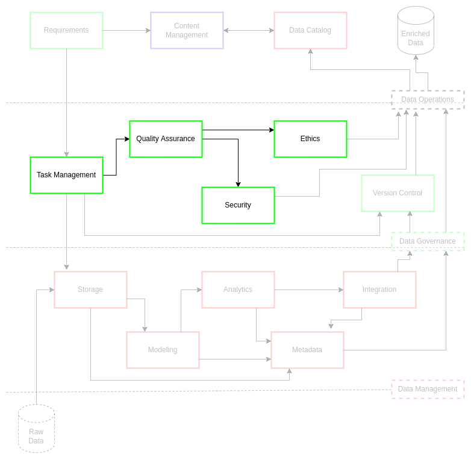

Quality Assurance#
Data operations is focused on mobilizing high-quality outcomes for data products and data services requests. This goal of quality assurance for data assets is critical as it effects the practices and shifts through data governance to data management fundamentals. Data quality management is the planning, implementation, and control of activities that apply consistent and rigorous techniques to requested data assets at a high standard of assurance[1].
This focus on assurance for reliability is ultimately geared towards building institutional trust with customers and stakeholders[2]. As the data operations standard encourages literacy for broad application of common data practices, quality assurance is directed at development of understanding for the methods and context of data products and services. These knowledge processes require a nuanced set of relationships linking planning, data practices, institutional data standards, and overarching data governance processes.
It is important to understand that data governance processes, like data operations and data management, should be handled and grown as a program and not a project. The mentality of a data assurance program encourages a strategic engagement with the practices as a holistic system within data operations, guiding data governance practices towards data management efficiencies. A commitment to this guidance results in measurability of impact, leading to data-driven cost reductions in operations, access to, and maintenance of data asset resources. Commitment to quality assurance also hedges security risks through iterative, supervised review of practices. Observation and refinement of these practices allows for rapid remediation of data challenges encounter by the customers.
Ultimately, quality assurance is a constant shift in how institutions manage their data assets: focusing on doing the right things consistently and rigorously with data rather than simply doing data things right. This dichotomy is the key difference between quality assurance (e.g., doing the right things) and quality control (e.g., doing things right)[3]. It is not simply enough to repeat a process: the customer must be able to repeat and validate what you do down to the smallest detail.
Data Dimensions#
In data assurance, dimensions are the features or characteristics of the data sets. These features are what data professionals use to define what the data represents in the real world and how this is reflected through institutional data systems. As a result, dimensions are critical in data management practices as they guide schema development and contextualize metadata generation. This impact situates data quality assurance as a critical element in data governance through guiding the initial dimensional definitions, through requirements, for use in data management systems.
There are seven foundational dimensions that ciuTshi adopts from DAMA[1]:
Accuracy is the degree of correctness to which the data represents things in the real world.
Completeness is the presence of all required data.
Consistency is the sameness of data points within and between associated data sets.
Integrity is the coherent completeness, accuracy, and consistency of referential and internal data sets.
Reasonability is the data pattern meeting the expectations for the data set.
Timeliness is the currency and volatility of the data asset.
Uniqueness is where an entity only exists once within a data set. This includes the consideration of deduplication.
Validity is where data values are consistent within a defined value set.
These dimensions guide the core of how metadata is constructed for use across multiple data architectures.
ISO 8000#
In addition to fundamental data dimensionality, quality assurance is also guided by ISO 8000 guidelines[1][4]. This standard not only covers general considerations for data quality, but suggests useful guidance on how to best implement data quality practices into industrial data systems and architectures.
Data Management#
ciuTshi is structured to fully-integrate data management practices with data operations through quality assurance, guiding and fully documenting a data assets path from requirements to end-of-life for data asset delivery and monitoring. There are several aspects to a data management practices that should be considered for implementation through data assurance. ciuTshi observes three initial considerations for lifecycle management: rules, issues, and profiling for enhancement.
Rules#
Rules are the most fundamental element of data lifecycle management. Though these may integrate in specific ways based on the data architecture, what they control and how they impact data management are commonly applied across institutional systems. The rule-based compliance to data dimension considerations within quality assurance drive institutional value of the architectures and the guiding standards. As a result, rules establish policy within and between institutional data architectures: distinguishing baseline data management across all systems while tracking unique practices within each without affecting reproducibility of results in the others. This goal of establishing and maintaining parity across data systems is how data lifecycle management sustains and evolves its practices with minimal strategic risks.
These rules, covering several factors including roles and responsibilities per standard module, will be detailed within the content management standard and metadata practices.
Issues#
Where rules establish parity of policy across systems, it should be understood that each rule is created to account for particular risks in the standards and data systems. These risks may be internally- or externally-driven based on the institution, the users, and the overarching data security policies. This version of the ciuTshi data operations standard covers four initial areas of consideration: leadership; data entry practices; functionality; and system design.
An initial consideration to consistent compliance with data operations practices is found in challenges with leadership. From persistent and incremental use of requirements for data management function to delivery of data products with educational and documentation materials, there is a cyclical relationship that must be maintained between leadership, project management, and the data management teams. Many of these will be addressed through development of nuanced content management practices. These practice in turn will allow data operations, data architecture, and technology team leadership to accurately and efficiently allocate resources for optimal project outcomes.
The next set of challenges revolve around data users and data flows in and out of the data management and data operations systems. Considering the close relationship between data architecture and data operations, close attention to data entry and processing practices is critical to the gathering and using metrics for system enhancements during the current data strategy period. As with leadership, these challenges will be defined and modularized within the content management and metamodel for data cataloging practices.
The final pair of challenges are closely linked: functionality and systems design. As mentioned with data entry, the metadata model is critical in maintaining consistent data dimensions across data collections, data architectures, and other IT systems. This attention to the effects on parity and consistently requires close attention to how data dimensions affect functionality of the data systems as new data come in and older data sets change. These shifts in data dimension may require changes in system design to accommodate the requirements and delivery structures that are deterministic of the customer and leadership direction and data architecture implementation. Once again, content management and metamodeling through data catalogs will allow for persistent analysis of data asset holdings, providing indicators for shift in data system functionality and design.
Data Profiling and Enhancement#
In order to maintain data dimensions, care and attention must be paid to how issues and rules affect data operations. This vigilance is maintained through metrics and KPIs. Through the template and rubric system, many of the metamodel fields will have analytic measures and models associated with their range of values. Beyond the metadata and data catalog fundamentals, access and tools will allow for descriptive statistics of raw and mastered data (as recorded in the metadata) which will provide for automated A/B testing of the data asset holdings. Additionally, the use of tags and labeling within content management and data catalogs will help further link metadata lineage between systems while driving inter- and intra-system compliance and enhancement.
Challenge#
Projects can process numerous single-use data sets across several projects and networks each year. This data management complexity makes data processing and data system reuse challenging. Quality assurance will ensure consistent implementation and documentation of data practices within data operations using options such as: a multi-network data catalog system, content management templates, reusable metadata models, and other adaptable practices. This standard demonstrates responsibility to data project customers and stakeholders through delivery of data assets in manners that are reproducible and maintainable to a high-level of quality. The dedication to reproducibility drives simplified transfer of knowledge between ciuTshi-compliant systems and customer systems, resulting in much quicker development cycles with enriched metrics, rapid feedback, and cumulative insight generation. In a constantly changing data landscape, projects needs to have a quality assurance system that encourages persistent vigilance on data operations resources and how to best mobilize them for optimized data management practices.
Goals#
Develop a quality assurance model to meet simple and maintainable standards for customers’ data asset requirements
Clarify foundational practices that ensure a consistent and rigorous data asset lifecycle management
Mobilize communication on quality standards with customers and stakeholders
Produce and adapt quality metrics for strategic changes in data quality strategy
Implementation#

ciuTshi is a flexible standard of modular practices that guides quality assurance at each stage of data operations for the data management team. These practices will be persistently maintained across all systems by the data management team with feedback from the data governance board to enable systems implementations. These implementations will produce documentation of streamlined practices with attention to updated metadata within the data catalogs. These practices will fall within the overarching data strategy for a project or organization while accounting for necessary changes in data and project operations. These changes will be assessed for omission or inclusion in the overall data operations standard. These assessments will rely heavily on adequate and accurate reporting from personnel and the data systems through which the assets are stored, processed, and delivered.
Data Quality Strategy#
With the ciuTshi data management approach, there are several considerations that must be accounted for in order to align current data environments to project and institutional requirements. The data strategy document will provide the overview for all changes to occur within a suggested two-year period (this will vary between organizations). The data quality strategy is a large part of this in several ways.
Data quality is the filter through which trends and planning will be pursued. As part of the data operations standard, the data governance board and data management team will work to clearly define guidance on roles and responsibilities for each module within the standard. This shared effort will assist in defining systemic rules critical for accurate quality audit controls via data architecture and IT while producing consistent metrics as defined in the content management standard. Rules and metrics aid profiling efforts for all parties through an adaptable model of checks and controls in which standard stakeholders in data operations reach consensus on the direction of the data strategy.
Assessment#
Assessment is a core element of data operations, implemented to consistently conform to data dimensions when processing data assets. This conformity is used to initially delineate two meta-groups of data assets: institutional essential data sets (e.g., critical data) and data sets that are both critical and frequently used (e.g., reference data). While each project may have data specific to its requirements, data teams must consistently assess commonly used data through provenance and lineage tracking of data utilization. Once again, data cataloging with metadata and content management standard application will supply this necessary foundation of knowledge towards critical and reference data assets for data operations.
Root Cause Analysis#
As stated in the DAMA-DMBOK[1]:
A root cause of a problem is a factor that, if eliminated, would remove the problem itself. Root cause analysis is a process of understanding factors that contribute to problems and the ways they contribute.
This is a critical element of quality assurance as maintaining consistent and rigorous processes are contingent upon persistent monitoring of systems and processes. These systems and processes must have detailed metrics that inform data architecture and data management teams of root challenges and immediate potential solutions. There are several methods to perform root cause analysis such as Pareto analysis, process analysis, and causal factor analysis among many others. Approaches to root cause analysis should be templated within the content management standard for future reference and documented throughout system-appropriate content management software for knowledge discovery.
Impact and Corrective Actions#
The primary goal of quality assurance is positive institutional impact. This impact should be carefully examined using carefully modeled metrics. These metrics will aid in selection of the most appropriate corrective actions. Much like the data dimensions, there are several baseline metric categories to consider:
Measurability - Metrics gathered on a data asset should be defined in a way that is countable.
Relevance - Metrics should useful and applicable to positive institutional impact.
Acceptability - Metrics should be framed dimensionally within institutional requirements.
Stewardship - Metrics should be defined, usable, and accountable by data operations stakeholders.
Controllability - Metrics should reflect a controllable institutional dimension.
Trending - Metrics should enable longitudinal and predictive improvement models.
All metrics defined in data operations, data management, and content management rubrics should be demonstrably linked to these categories. This practice is part of a larger statistical process control that helps remediate requirements between data management and data architecture teams. The data governance board are the primary stakeholders, routing concerns from project operations to data operations with purview over institutional alignment of metrics for institutional value. Data operations is then tasked to review and communicate dimensional shifts in metric indicators to the board for overall data asset and data systems enhancement. The goal of these exchanges is to progress the data operations standard for persistent improvement during the data strategy period.
Reporting#
Institutional impact and corrective actions require accurate and consistent reporting in order to enable standard improvements. Reporting is critical as consistent documentation of negotiated metrics for quality assurance enables knowledge discovery during the root cause analysis for a given data asset challenge. Defects and other flaws in the system require rapid and accurate reporting between project and data operations as a primary requirement adjustment mechanism. This mechanism will aid the data management team in their task management and content management efforts including metadata shifts, data catalog adjustments, and delivery timeline effects resultant from new requirements.